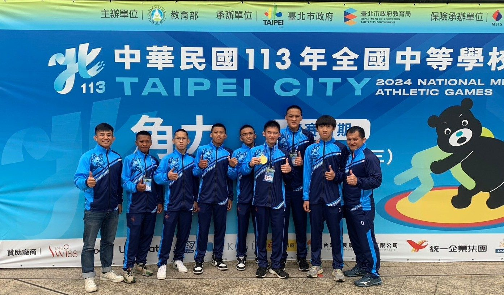
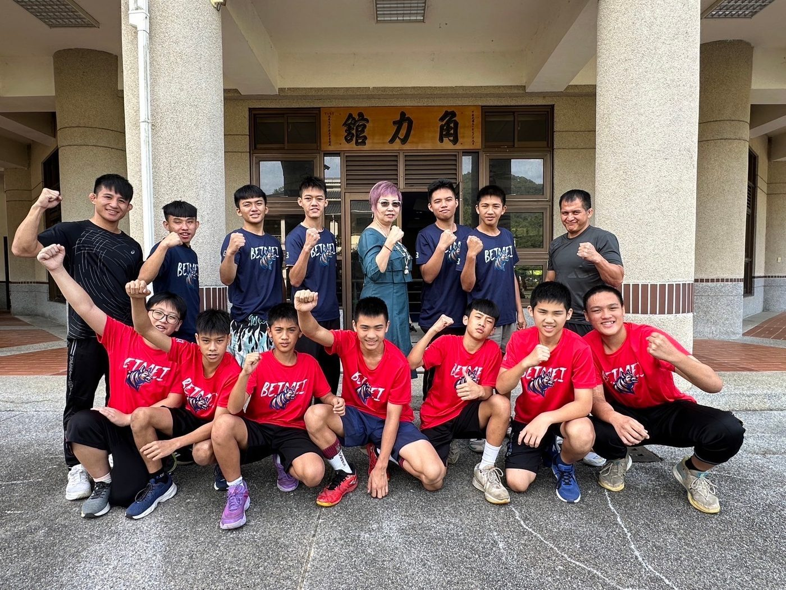
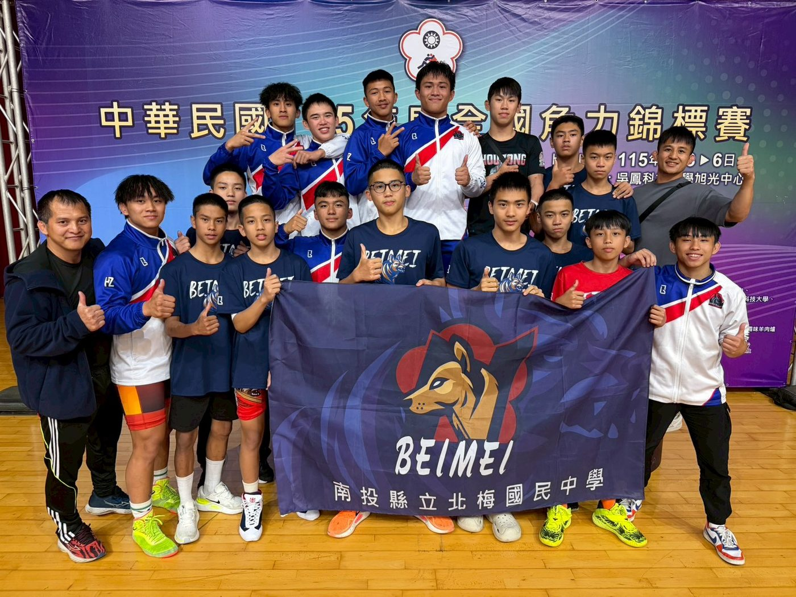
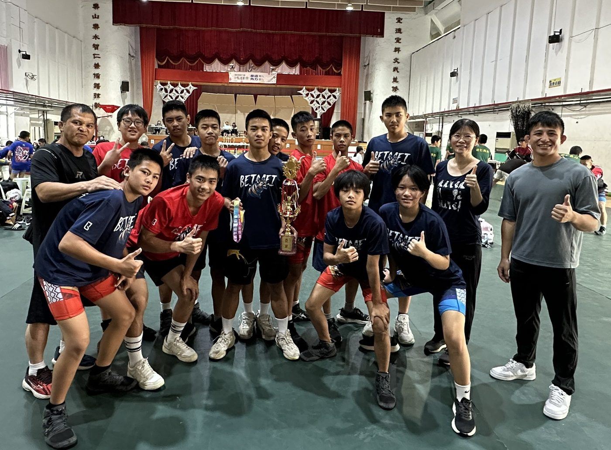

01我的故事
南投縣北梅國中 運動團隊發展計畫
南投縣北梅國民中學自民國81年成立角力運動社團以來，長期將角力運動列為學校體育發展之重點項目。學生普遍具備高度運動參與動機，學校亦持續投入相關資源，營造安全且具支持性的訓練環境，使學生能在學習與競技歷程中發揮潛能、建立自信。
本校角力運動以社團方式推動，善用晨間與課後時間進行訓練，並依競賽期程於假日及寒、暑假規劃加強訓練。在教師與專業教練的長期陪伴與指導下，學生歷年來於各項賽事中展現出優異的表現，展現本校體育專項扎根與培育成果。
近年來，學校因應運動訓練科學化與學生身心健康發展趨勢，積極建構正確體育觀念與安全訓練模式，以角力為核心，延伸推展傳統摔角、籃球、田徑投擲及卡巴迪等多元運動項目，建立學生廣泛的動作基礎與身體素質，降低過度使用造成之運動傷害，同時提升學習動機與參與樂趣。期望透過系統化訓練，培育具潛力之運動員，促進其體能、心理與品格的全面成長。




推薦理由
本校位處特殊偏遠地區，是一所融合客家、閩南及原住民族文化的多元校園，參與體育運動的學生多來自弱勢家庭。對許多孩子而言，體育不只是競賽，而是一條看見自我、翻轉未來的重要道路。
學校以「投角爭榮・籃田書願」為發展願景，透過體育教育引導學生勇於面對困境、挑戰自我，培養自律、專注與抗壓能力，補足紙筆測驗以外的重要素養。
我們深信，運動不只是追求成績，更是在培養孩子面對人生的能力。期望透過體育教育翻轉學生學習歷程，培育兼具良好品格與實務能力之優秀運動人才，並為孩子打造更多元的成長舞台。